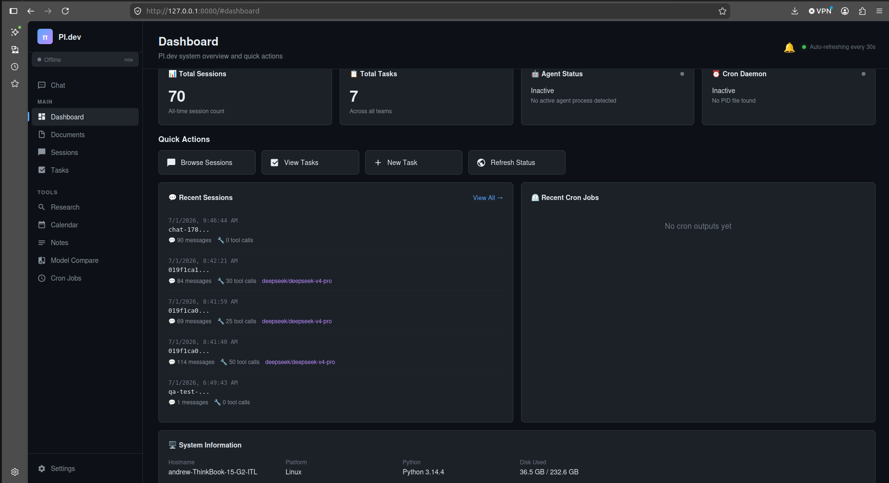
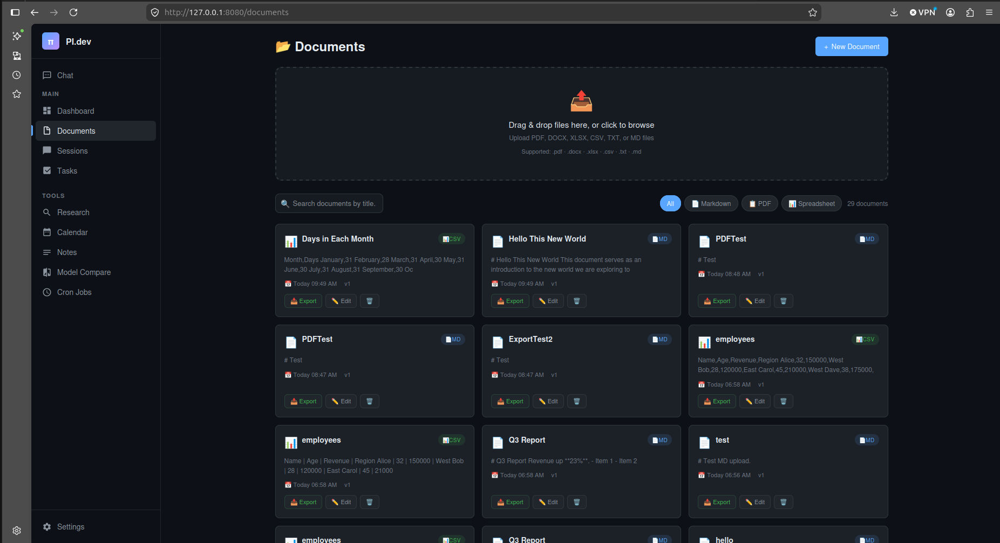
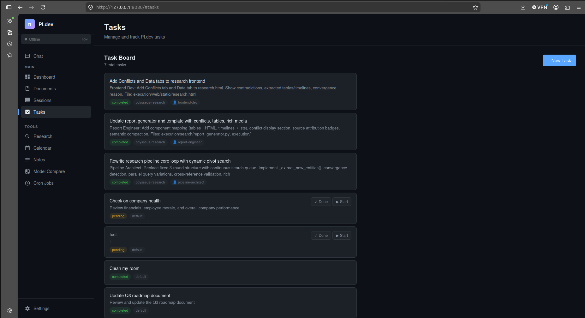
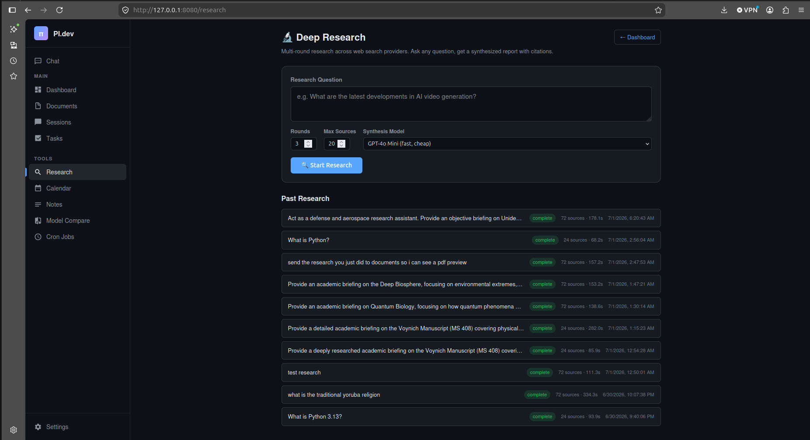
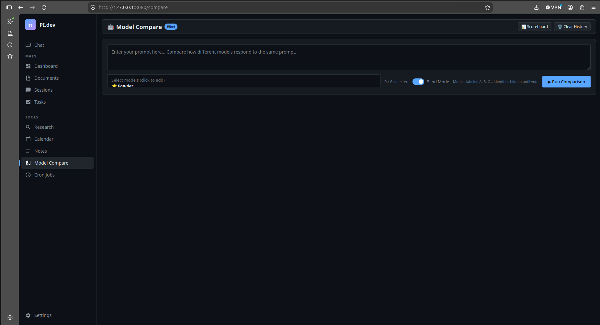

An all-in-one AI workspace that puts a persistent agent in control. Research, documents, calendar, tasks, notes, cron jobs, memory search, and model comparison — all driven through a single chat interface.

Productivity tools are fragmented. You switch between chat, documents, calendar, task managers, search, and research tools — losing context at every boundary. Most AI assistants can talk but can't actually do anything. They hallucinate calendar entries, pretend to schedule meetings, and can't access your actual data.
A unified workspace where a single AI agent controls everything. Chat is the interface. Floating windows show tools in action. The agent doesn't pretend — it executes real API calls to create calendar events, build documents, analyze spreadsheets, run deep research, manage cron jobs, search memory, and compare models side-by-side.
Dynamic pivot search with convergence detection. Two-pass LLM synthesis produces thesis-quality reports with citations. Automatic document creation from results.
Markdown editor with PDF export (weasyprint). File upload with auto-extraction (PDF, DOCX, XLSX, CSV). Spreadsheet analysis via pandas. Version history. AI suggestions.
Full CRUD via chat. "Schedule a meeting tomorrow at 3pm" actually creates the event. Tasks with status tracking, team assignment, and deadline awareness.
Background daemon auto-starts with the server. Missed-job detection on restart. Error logging with diagnostics. Self-healing cron job that fixes broken tasks daily.
FTS5 session search + RAG (ChromaDB) + LLM Wiki. The agent can search past conversations, retrieve knowledge base entries, and reference everything you've discussed.
Side-by-side streaming with blind identity hiding. Vote on winners. Scoreboard tracks history. "Compare GPT-4o vs Claude on this prompt" — done in seconds.




Built on a 3-layer architecture: directives (what to do) → orchestration (decision making) → execution (deterministic Python). LLMs handle reasoning; deterministic scripts handle reliability. Floating window system for tool visualization. FastAPI backend, vanilla JS frontend. OpenRouter for model access. Weasyprint for PDF generation.
Every business deserves an AI workspace that actually does the work. Let's build yours.
BOOK_FREE_AUDIT